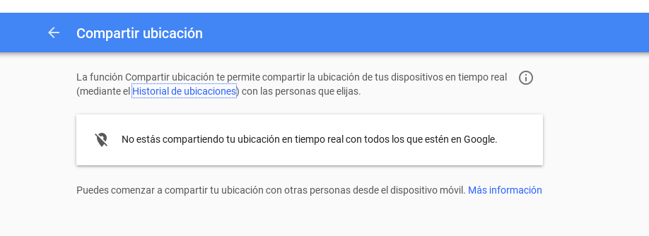

Lucio Chávez, Edgar Osorio y Odin Mojica. @odinm y odinmojica@mozilla-mexico.org
f. Ámbito de la vida privada que se tiene derecho a proteger de cualquier intromisión.[1]
Es un derecho inherente a cada ser humano, que tiene independencia frente a otros factores, no puede transferirse ni se puede renunciar a él. Como el resto de los derechos humanos, el derecho a la privacidad busca garantizar la dignidad del individuo.
[1] http://dle.rae.es/?id=UD4g0KW
Cualquier dato cuya difusión pueda resultar perjudicial
"Datos sobre datos". Pueden ayudar a determinar:
México vive desde hace varios años una crisis en temas de derechos humanos.
Esa crisis se extendió también al entorno digital y al ejercicio de nuestros derechos en internet.
La vigilacia a llegado a cortar la libertad de expresión.
La vigilancia no tiene que ver con la seguridad, tiene que ver más con el poder.
La información es poder y cada uno de nosotros emitimos basta información a diario
La vigilancia y almacenamiento de datos personales pueden convertirse en públicos.
No podemos renunciar a nuestra privacidad a cambio de la seguridad.
No dudemos que la vigilancia y almacenmiento de datos ya haya cobrado victimas, incluso los más vulnerables, los periodistas.
Entre otras instituciones que investigan actos de corrupción del gobierno y temas de abusos a derechos humanos por parte del Estado como las ejecuciones extrajudiciales en Tanhuato, Michoacán, la desaparición de los 43 de Ayotzinapa, la discusión de la ley 3 de 3, la red de empresas fantasma del gobierno de Javier Duarte.
Con cada servicio que usamos generamos datos, muchas veces información sensible.
Los principales agentes poseedores de nuestros datos son:
Facebook solicita a bancos de EE.UU. que le compartan datos de clientes[1]
Fuga y mal uso de información por "socios" como Cambridge Analytica entre otros.
[1] https://r3d.mx/2018/08/06/facebook-solicita-a-bancos-de-ee-uu-que-le-compartan-datos-de-clientes/
Entra a tus configuraciones de tu cuenta de gmail y verás.
